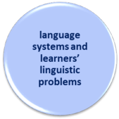

Delta Module One: Syllabus area 4
Language skills and learners’ linguistic problems
Examination tasks

|  |
Your knowledge of language systems and learners' linguistic problems is specifically tested in a number of tasks in the examination. |
| Tasks | Examples |
 Paper 1, Task 1
This is the simple labelling task. You are supplied
with a set of definitions and asked to label them
accordingly. One or two of these will concern language
skills and learner issues. |
 Clearly, question setters have lots of data to draw on for this task. You need to make sure you have mastered the terminology of language skills analysis. |
 Paper 1, Task 2
You have to provide a definition
and an example of the four terms you are given. Some
of these will focus on skills and learner issues. |
 |
 Paper 1, Task 3 This task does not explicitly target language skills. |
You need, however, to be happy that you can use terms
such as skim, scan, process, negotiate,
discriminate, segmentation, initiate, elicit, inform etc. accurately and precisely to
describe language skills need to deploy to perform
tasks. Reading the skills guides and reference books is the only preparation you require. |
 Paper1, Task 4 This task focuses on strengths and weaknesses in a learner's production. This refers to both language systems and language skills, of course. |
Successfully to describe the strengths and weaknesses, you
will need the correct terminology. Bear in mind that
you may get a transcript of student talk here (although
that's less likely) and/or a
written text , so you need to
be able to analyse speaking, too. |
 Paper1, Task 5 This task does not explicitly target skills analysis. |
You will, however, be expected to identify the genre and
pick out the linguistic elements which are typical of it so
make sure you have assimilated the data in the guides to
genre, verbal processes and circumstances on this site.
Here's a short test. |
You will be pleased to know that Paper 2 does not explicitly focus on skills analysis but you will have to describe certain features accurately when evaluating materials.
Task 2 in Paper 2 may focus explicitly on skills development so you will need to apply accurate terminology and state what the authors' assumptions are about areas such as the importance of integrating top-down and bottom-up processing and so on.
Some more ideas to prepare for this area of the syllabus:
- Go to the A-Z training index and make sure you can give a short definition of the terms in that list.
- Select any of the skills guides in the in-service index or the initial-plus index and read through it, making your own definition of each technical term you encounter.
- Be your own item setter. Work with a colleague and set each other tests on language skills and learners' issues with them.
- If you have not already done so, go through the Delta guides to Paper 1 and Paper 2 focusing specifically on the tasks above. There are more example tests there.
- When you are ready, do the Mock Examination for Delta
Module One.
Do NOT do this until you have worked through all the materials in this course or you will be putting the cart before the horse and wasting the mock examination before you are ready to benefit from it.
 |
| course index |